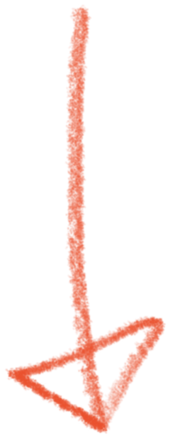
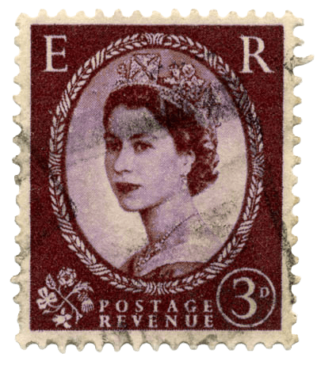
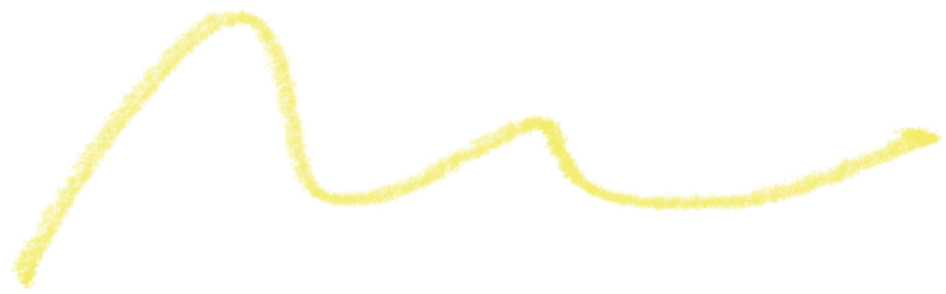

From
Chanwoo Kim
London SW7 4BG
United Kingdom
Chanwoo Kim
London SW7 4BG
United Kingdom
To
Seoul
South Korea
Seoul
South Korea
멀리 달리 살았지만

연말 파티
2025.12.31 ─ 연남동 공상온도
안녕하세요, 찬우입니다. 잘 지내셨나요?
한국을 떠나 일 년 삼개월 살았네요. 미국에서의 시간을 거치고, 얼마 전 영국에 조금 더 장기적인 시각으로 정착하게 됐습니다. 연말 연초에는 한국을 방문합니다.
지금보다, 예전에 주변인들과 더 응집되게 살았던 것 같습니다. 같은 것들을 배웠든, 같은 대상에 열정을 쏟았든, 조금 덜 재고 또 덜 자기 선을 긋지 않았던가 싶습니다.
시간이 지나, 저도 살다 살다, 다음의 문장을 받아들여 보기로 했습니다: 우리가 서로 다른 삶을 사는 것, 또 나이들어 갈수록 우리의 삶이 멀어지는 것은 불가피하다.
(그렇게 말하며 제가 지구 가장 반대편으로 이사와 버렸네요. 하지만 제 의중을 이해하시죠?)
하지만, 우리의 삶이 어떤 방향으로 나아가든, 아마 의미 있는 진중한 대화만큼은 여전히 사랑할 사람들과 연말 저녁 한곳에 모여 보면 어떨까요?
오랜만에 만나요.
열려 있을 시간
2025년 12월 31일
오후 7시부터 10시 15분까지
오후 7시부터 10시 15분까지
만날 곳
서울특별시 마포구 동교로23길 40, 공상온도
우리 삶이 나아가는 방향들이 가까워질 날을… 그렇지만 여전히 꿈꿉니다.
찬우 올림